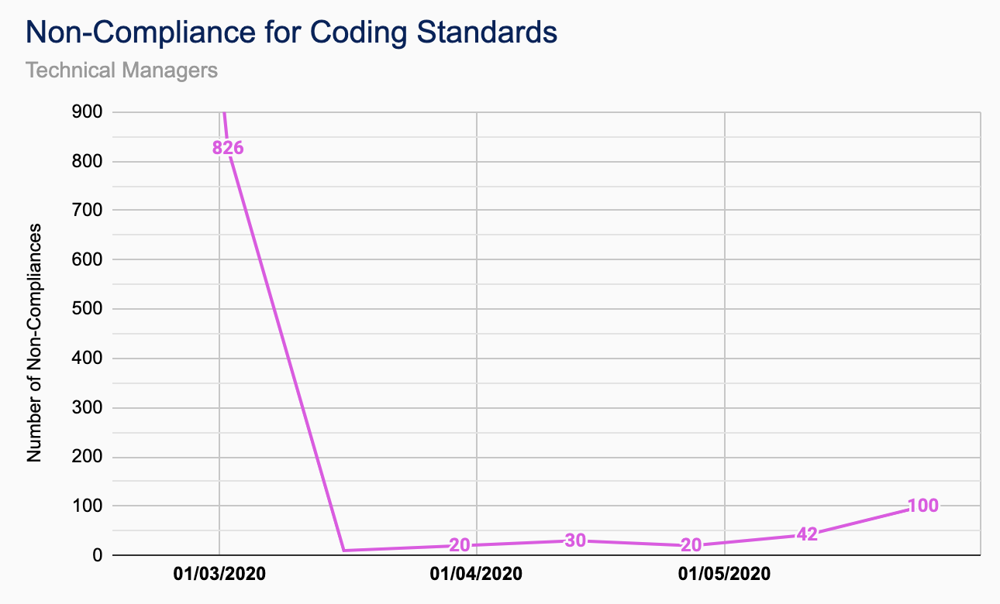
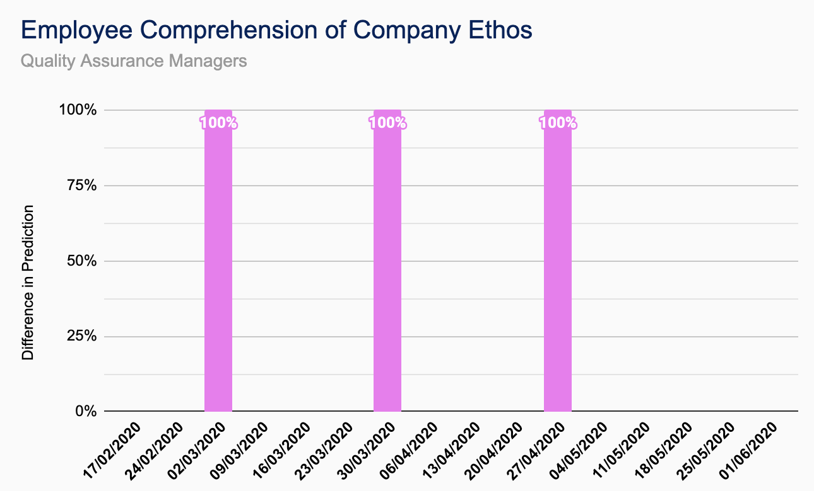

James Gardner
Technical Manager &
QA Manager
Joined: Sept. 2019
Related Projects: TutorPoint
Education: MEng Electronic Engineering
As part of CUBIXEL . . .
. . . I'm involved with all technical and quality assurance decisions made on any of our projects. As Technical Manager I make sure that we are always using the latest technology and development practices enabling us to meet even the most demanding of customer requirements. As QA Manager I helped create and manage our company QA manual and metrics and ensure that we are always meeting our own exacting standards and delivering real customer value.
For TutorPoint . . .
. . . I've been responsible for deciding the technology behind TutorPoint, making decisions on the tools and design practices to ensure smooth development. I’ve also managed the TutorPoint servers for hosting our MySQL Databases and CUBIXEL website.
Outside of work . . .
. . . I enjoy being outdoors and going for runs and often go for weekend breaks in the Yorkshire Dales or the Lake District. I also love CUBIXEL’s home city of York and frequently visit any number of it’s amazing independent pubs and cafes.
Favourite programming language?
Java or C.
Contributions
| TutorPoint |
|---|
| Initial Client, Server and Database Building |
| MySQL Database and Java/MySQL Interface |
| Login and Register Functionality |
| User Profiles and Updating Account Details |
| Subject and Tutor Windows |
| Initializing/Hosting/Joining a Stream |
| Dynamic Home Page with Updating Live Tutors |
| Subscriptions Page with Recommended Subjects |
| Other |
|---|
| CUBIXEL GitHub Repository Setup |
| Azure Server Management |
| MySQL Database Hosting/Management |
| HTML Website Hosting |
TutorPoint Breakdown


QA Metrics
-

Software Development Team Agility
Using the ‘Assess Your Agility’ self-assessment quiz. This should be done at the beginning of each iteration to review the previous iterations performance. Lowest Value Recorded. -

Time Estimates for User Stories
Difference between estimated time and actual time for completion of user stories so as to refine estimates. This should be done at the end of each iteration as a sum of all stories. Further time estimates should then be updated based on the insight from this check. -

Non-Compliance for Coding Standards
A code review should be done for each story completed and marked as ‘checked’ alongside the user story card. Any non-compliances should be highlighted and recorded. The number of non-compliances should be reduced as the team learns the coding standards. Code should also be reviewed for adherence to standards imposed by outside regulatory bodies as and when required. -

Coherence to Management QA Metrics
Use the assess the ‘QA Metric Testing’ document and check that all QA Metrics have a test and are being satisfied. This should be done at the end of every iteration, measured as a percentage of metrics being currently assessed. -

Employee Comprehension of Company Ethos
Complete random audits once every four weeks on one member of the team using the ‘Team Checker’ document. Number of non-compliances noted and raised if necessary. -

Document Standardisation
Company documents proofread every other iteration with any issues noted and raised. Number of non-compliances recorded and highlighted on the ‘Document Checker’ document.